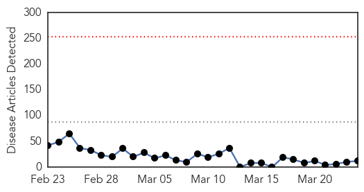
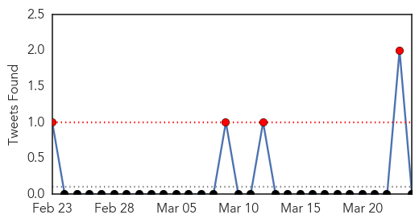
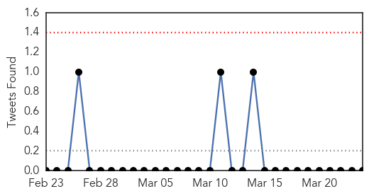

Measles
30-Day Web Trend
0 alerts, 0 warnings

30-Day Twitter Trend
1 alerts, 0 warnings

Article Locations

Article Confidences
Top Articles:
- 0.926
- Passengers test positive for measles after flying into Vancouver
- 0.871
- Measles in Vancouver
- 0.841
- Dana Hills High School
- 0.834
- AM730 All Traffic All The Time
- 0.775
- Airline Passengers Arrive in Vancouver With Measles
- 0.707
- Doctors try to track down those on measles flight
- 0.699
- Vancouver health officials managed to track half of those who flew in on measles plane
- 0.665
- Passengers with measles travelled from China to Vancouver
- 0.644
- Quelling vaccine fear in Spokane’s Russian-speaking community
- 0.635
- Measles found in 2 passengers on Air China flight CA991 to Vancouver
- 0.613
- Two airline passengers arrive in Vancouver with measles
- 0.576
- Measles Outbreak Reignites Vaccination Debate
Top Tweets:
-
No tweets found for Mar 24, 2015
Influenza
30-Day Web Trend
0 alerts, 0 warnings

30-Day Twitter Trend
3 alerts, 0 warnings

Article Locations

Article Confidences

Top Articles:
- 0.989
- India flounders as H1N1 spreads
- 0.751
- March 24, 2015 Archives
- 0.751
- March 24, 2015 Archives
- 0.751
- March 23, 2015 Archives
- 0.751
- March 23, 2015 Archives
- 0.751
- March 23, 2015 Archives
- 0.751
- March 23, 2015 Archives
- 0.710
- How employers fight the flu
- 0.700
- Pandemic Influenza Therapeutic Pipeline Review H1 2015 Research Report
- 0.679
- Pentavalent vaccine not cause of Ujjain infant’s death, says lab test
- 0.620
- USDA to test avian flu vaccine; wild birds nixed as Minnesota H5N2 source
- 0.579
- Why We Don't Have A Cure For The Common Cold
Top Tweets:
-
No tweets found for Mar 24, 2015